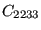
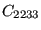
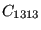
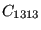

Next: User materials Up: Materials Previous: Elastic anisotropy with isotropic Contents
This material model is similar to the previous one, except that
In the present implementation orthotropic elastic behavior is
assumed. Consequently, for each temperature 9
constants need to be defined: the elastic constants  ,
,
 ,
,  ,
, ,
,
,
,  ,
, ,
 and
,
 and  .
.
The material definition consists of a *MATERIAL card defining the name of the material. This name HAS TO START WITH ”ANISO_CREEP” but can be up to 80 characters long. Thus, the last 69 characters can be freely chosen by the user. Within the material definition a *USER MATERIAL card has to be used satisfying:
First line:
Following lines, in sets of 2:
First line of set:
Repeat this set if needed to define complete temperature dependence.
The principal axes of the material are assumed to coincide with the global coordinate system. If this is not the case, use an *ORIENTATION card to define a local system.
For this model, there are 7 internal state variables (recall that CalculiX
does not make a distinction between plastic strain and creep strain: the field
 contains the sum of both):
contains the sum of both):
These variables are accessible through the *EL PRINT (.dat file) and *EL FILE (.frd file) keywords in exactly this order (label SDV). The *DEPVAR card must be included in the material definition with a value of 7.
The creep subroutine has to be provided by the user (cf. Section 9.1). Since the material is anisotropic the input to the creep routine is the equivalent deviatoric creep strain, the output is the von Mises stress and the derivative of the equivalent deviatoric creep strain increment w.r.t. the von Mises stress.
Example: *MATERIAL,NAME=ANISO_CREEP *USER MATERIAL,CONSTANTS=9 500000.,157200.,500000.,157200.,157200.,500000.,126200.,126200., 126200. *DEPVAR 7
defines a single crystal with elastic constants 500000., 157200., 500000., 157200., 157200., 500000., 126200., 126200. and 126200.. The creep law has to be provide by the user in the form of a creep.f subroutine.